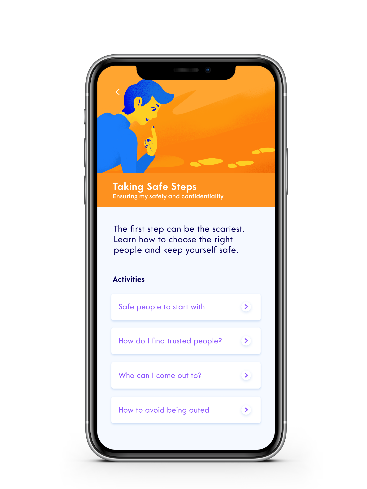
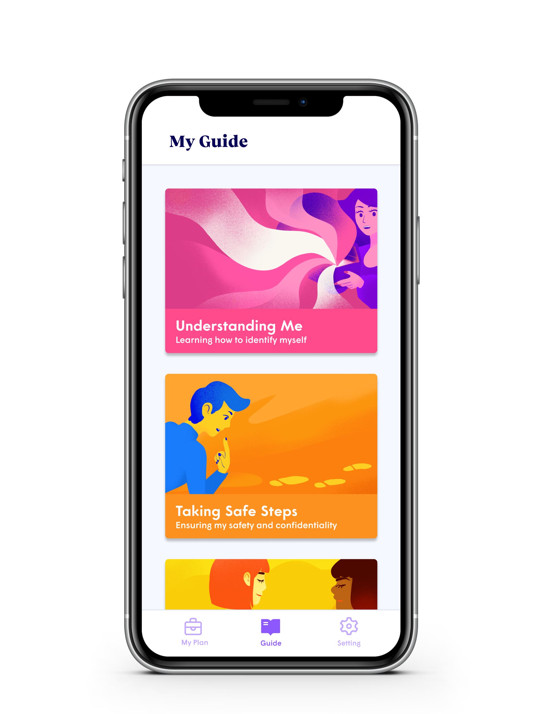
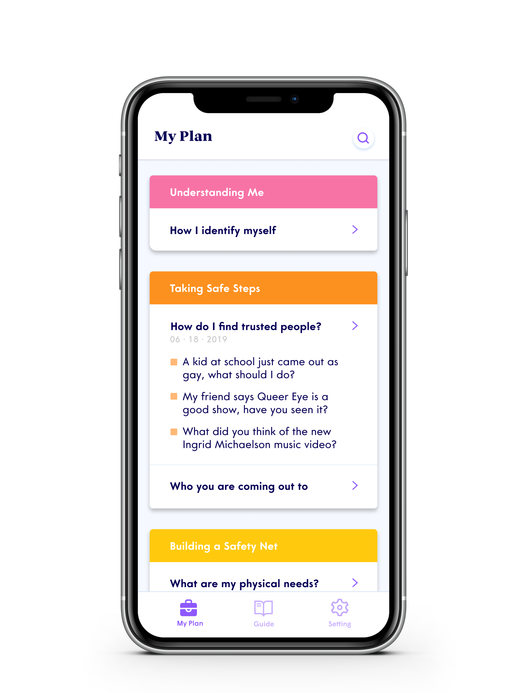

Haven
A safe space to gather your thoughts
Haven is a speculative app for LGBTQ+ youth to build their critical thinking skills, support systems, and situational awareness as they plan to come out. The prototype was created in 2019 during a senior-level interface design course at SFU’s SIAT design school. At the time, I saw many peers center design projects around business opportunities, ignoring many interesting user opportunities. So in the first meeting of this 8 week project, I challenged my team to decide on a meaningful audience before searching for market justifications. The team agreed on the LGBTQ+ community, and Haven was born.
Role
- Interaction Design,
- Sprint Coordination
Timeline
- 8 week project at SFU's SIAT Design School
Team
- Alfred Zhang
- Steph Therriualt
- Sahil Mann
- Quinn MacDonald
- Tiffany Chan
![A short-haired teenager wearing a hoodie. 'A 16-year-old high school student who recently began identifying as bisexual. they are scared their parents will disown them if they confide in them, and are frustrated by being unable to tell anyone around them.' 'Goals: Find someone they can come out to safely. To be able to live and date openly. Needs: Be aware of potential outcomes of coming out. To build a support system and plan before coming out. Behaviours: Reads LGBTQIA+ forums without enaging in discussions. Watches coming out stories in incognito on their phone. Frictions: Limited privacy living with family. Fear of being ostracized by family anf friends.'](Assets/Haven/Persona-1920w.png)